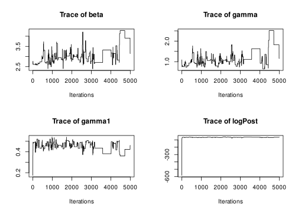
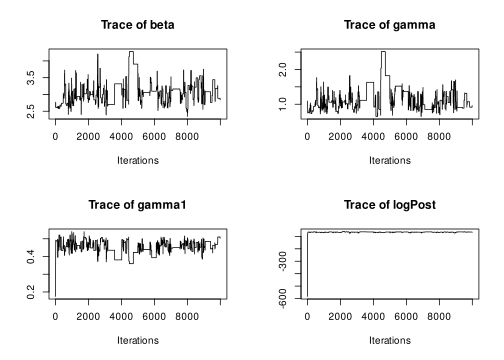
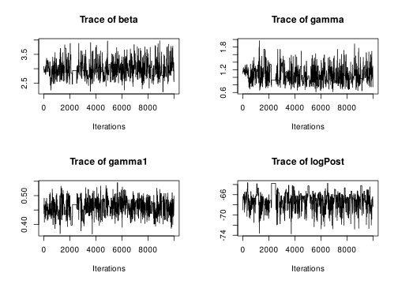
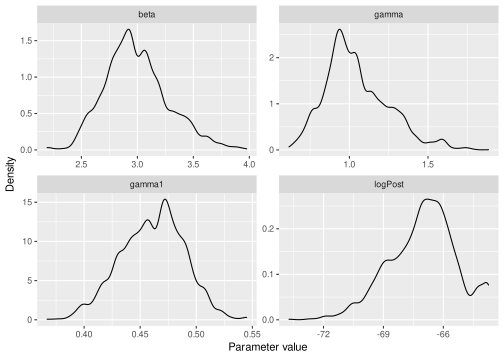
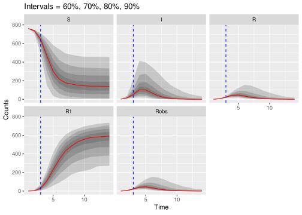

5 Particle MCMC
Here we will return to the influenza in a boarding school example. Please note that an alternative frequentist approach, using maximum likelihood via iterated filtering (MIF) framework of Ionides, Bretó, and King (2006), and implemented in the pomp package, can be found at:
https://kingaa.github.io/sbied/mif/mif.html#an-iterated-filtering-algorithm-if2.
Here we use a simpler model but use a full Bayesian approach using a particle Markov chain Monte Carlo (PMCMC) routine (Andrieu, Doucet, and Holenstein 2010) with a bootstrap particle filter to estimate the likelihood (Gordon, Salmond, and Smith 1993), as described in the lectures.
Note that PMCMC is extremely computationally intensive, and the only real way to make it tractable for many problems is to code both the simulation code and the MCMC code in a low-level language such as C/C++. We could use pomp to fit this model using the same PMCMC routine described here, but the syntax is different to the SimInf style. So instead the SimBIID package provides a function PMCMC() that runs this algorithm, and if you pass a SimBIID_model object to this function, it will automatically compile in the correct manner.
As before, we load the data and the SimBIID package:
## load libraries
library(outbreaks)
library(SimBIID)
## set up data
flu <- influenza_england_1978_school
flu$day <- 1:nrow(flu)5.1 Arguments for PMCMC() function
If you look at the help file for the PMCMC() function (e.g. ?PMCMC), you will see the main arguments to the PMCMC() function , which are summarised below:
x: adata.framecontaining time series count data, with the first column calledt, followed by columns of time-series counts. The time-series counts columns must be in the order of thecountsobject in thefuncfunction (see below).priors: adata.framecontaining prior information (in the same format as for theABCSMC()function—see Section 3.2.2).func: aSimBIID_modelobject (which can be created usingmparseRcpp()). This must have a stochastic observation process specified—see Section 5.1.2.u: a named vector of initial states (in the same format as for theABCSMC()function—see Section 3.2.4).npart: an integer specifying the number of particles for the bootstrap particle filter.iniPars: a named vector of initial values for the parameters of the model. If left unspecified, then these are sampled from the prior distribution(s).niter: an integer specifying the number of iterations to run the MCMC.
5.1.1 Data
The x argument that we will pass to the PMCMC() function will be a data.frame with the first column corresponding to t and the second corresponding to the observed \(R\) curve. Here we set up a data.frame called flu_dat that is in the correct format:
## t Robs
## 1 1 3
## 2 2 8
## 3 3 26
## 4 4 76
## 5 5 225
## 6 6 2985.1.2 Observation process
When we specify our simulation model using mparseRcpp(), we also need to specify a stochastic observation process. This is passed as an argument called obsProcess to the mparseRcpp() function. This argument must be a data.frame, with columns in the order: dataNames, dist, p1, p2.
dataNamesis a character denoting the observed data (must match a column in thexdata frame—see Section 5.1.1);distis a character specifying the distribution of the observation process (must be one of"unif","pois"or"binom"at the current time);p1is the first parameter (the lower bound in the case of"unif", the rate in the case of"pois", or the size in the case of"binom");p2is the second parameter (the upper bound in the case of"unif",NAin the case of"pois", andprobin the case of"binom").
Here we will place a Poisson observation process around the \(R\) curve, such that: \[ R_t \sim \mbox{Po}(R^\prime_t + 10^{-6}), \] where \(R_t\) is the observed \(R\) count at time \(t\), \(R^\prime_t\) is the simulated count. We add a small constant (\(10^{-6}\) here) following the suggestion here. This is important to prevent numerical errors, since the simulated counts \(R^\prime_t\) could be zero, which would result in the Poisson rate parameter being zero, which violates the conditions of the Poisson distribution, and would thus produce non-finite likelihood estimates. The addition of a small constant prevents this from happening.
The idea of putting some form of Poisson noise on the parameters of time-series count models has been used various times in the literature (e.g. Funk et al. 2016). Often the observation term is placed on the incidence curves (i.e. new infections / removals). The variance of the Poisson distribution is equal to the mean (so a mean of \(R^\prime_t\) has a variance of \(R^\prime_t\) also), and since incidence curves tend to be smaller in magnitude than the counts in each class, then this can result in a tighter match between the simulations and the data. It is often usual that the mean of the Poisson noise is also scaled by some parameter corresponding to an under-reporting rate, meaning that the model assumes that the average observed counts are less than the true values.
In this example, we do not have incidence curves, so we place a Poisson error around the \(R^\prime_t\) counts instead. Note here that there is no strong epidemiological reason for the Poisson term in this case. We can assume that in a closed boarding school population, it would be unlikely that too many ill boys would be missed, and hence the observed counts are likely to be close to the true counts, and thus the amount of variation added by the Poisson noise term here is likely to be larger than we might ideally think is present in the data. In essence the Poisson term is providing an approximation, allowing simulations to have a non-negligible weight even if they do not match the observed curves exactly. As such the introduction of this term in this instance is introducing some approximation into the process, but in doing so is allowing us to fit a model in a computationally feasible way. In practice I would want to use a distribution with lower variances however.
To this end, other options might include putting a Gaussian error around the observed counts, where the variance could be made smaller than the mean (e.g. \(R_t \sim N(R^\prime_t, \alpha R^\prime_t + 1)\) for \(\alpha \in (0, 1)\)). This would penalise simulations that lie further away from the observed data more than the Poisson model we are using, at the cost of requiring a larger number of particles / a longer run time to evaluate. (Bear in mind also that the Gaussian models continuous random variables, and is unbounded. Hence if you simulate from this observation process then you could get simulated counts that are both non-integer and negative-valued. This type of approximation might help model fitting, but is a good example of where the the biological interpretation of the noise process is not always realistic, but might be “good enough”.)
Hence, other (better) observation processes could also be used, but this choice allows us to produce some reasonable estimates in a reasonable computational load. The observed data, \(R_t\), is coded as the Robs column in the flu_dat data frame—see Section 5.1.1. To set up the observation process defined above, we define a data.frame as follows:
## set up observation process
obs <- data.frame(
dataNames = "Robs",
dist = "pois",
p1 = "R + 1e-5",
p2 = NA,
stringsAsFactors = F
)
obs## dataNames dist p1 p2
## 1 Robs pois R + 1e-5 NAA key point is that we do not specify a tspan argument. Rather, these will be determined by the x argument that we specified in Section 5.1.1.
For completeness, we can remind ourselves that the simulation model is specified as:
## set up model
transitions <- c(
"S -> beta * S * I / (S + I + R + R1) -> I",
"I -> gamma * I -> R",
"R -> gamma1 * R -> R1"
)
compartments <- c("S", "I", "R", "R1")
pars <- c("beta", "gamma", "gamma1")
model <- mparseRcpp(
transitions = transitions,
compartments = compartments,
pars = pars,
obsProcess = obs
)Note: we do not have to pre-compile the model here. The
PMCMC()function will do this for us. This is because we need to compile as an object to run from C rather than R, so thePMCMC()function deals with this automatically.
5.2 Running the PMCMC algorithm
Now we run the PMCMC algorithm for 5,000 iterations, using 25 particles. We pass the same initial states and priors as in the ABC-SMC practical. We print summaries to the screen every 1,000 iterations (nprintsum = 1000):
## set priors
priors <- data.frame(
parnames = c("beta", "gamma", "gamma1"),
dist = rep("unif", 3),
stringsAsFactors = F)
priors$p1 <- c(0, 0, 0)
priors$p2 <- c(5, 5, 5)
## define initial states
iniStates <- c(S = 762, I = 1, R = 0, R1 = 0)## run PMCMC algorithm
post <- PMCMC(
x = flu_dat,
priors = priors,
func = model,
u = iniStates,
npart = 25,
niter = 5000,
nprintsum = 1000
)## Number of iterations: 5000
## Number of particles: 25
## Mixing proportion for proposal: 0.05
## Start adaptive proposal at iteration: 100
##
## Number of parameters: 3
##
## Priors:
## beta ~ U(lower = 0, upper = 5)
## gamma ~ U(lower = 0, upper = 5)
## gamma1 ~ U(lower = 0, upper = 5)
##
## Number of classes: 4
##
## Initial states:
## state[0] = 762
## state[1] = 1
## state[2] = 0
## state[3] = 0
##
## Initialising system...
## Initialisation complete!
##
## Initial parameter values:
##
## beta = 2.73907
## gamma = 1.0908
## gamma1 = 0.17482
##
## Starting runs...
## i = 1000 acc = 0.07 time = 14.83 secs
## i = 2000 acc = 0.06 time = 15.29 secs
## i = 3000 acc = 0.05 time = 15.40 secs
## i = 4000 acc = 0.02 time = 12.91 secs
## i = 5000 acc = 0.03 time = 12.24 secs
## Final time = 70.66 secs
We can see that the chain looks like it’s converging towards a stationary distribution, but let’s run it for a bit longer. We can do this simply by passing our current PMCMC object back into the PMCMC() function:
(I’ve suppressed the output for brevity here…)

5.3 Optimising the number of particles
The mixing of the chain and the speed of convergence is related to the number of particles (amongst other things). There is no strong consensus, but a rule-of-thumb is to try to choose the number of particles such that the variance of the log-likelihood estimate at a suitable set of parameters \(\theta^\prime\) is between 1–3. Clearly the larger the number of particles, the higher the computational burden, so in practice the additional computational burden of the simulations must be balanced against the improved mixing and faster convergence. This is tricky, so instead here we take a simpler approach.
Firstly we run the chain for a fixed number of particles until it looks like the chain has converged. Then we choose a set of parameter values \(\theta^\prime\) chosen to be the posterior medians. We then generate 500 estimates of the log-likelihood for a range of different numbers of particles, from which we can calculate the variance of these estimates. We then choose the smallest number of particles with a variance of the log-likelihood of less than 3.
Hence, from the training runs above we can remove some burn-in iterations, and extract the posterior medians:
postMed <- window(post, start = 2000)
postMed <- as.matrix(postMed$pars)
postMed <- apply(postMed, 2, median)
postMed <- postMed[-length(postMed)]
postMed## beta gamma gamma1
## 3.0804375 1.0818692 0.4504811We can produce 500 estimates of the log-likelihood by setting the fixpars = T argument to the PMCMC() function, passing in the postMed estimates above.
flu_train <- PMCMC(
x = flu_dat,
priors = priors,
func = model,
u = iniStates,
npart = 25,
iniPars = postMed,
niter = 500,
fixpars = T
)This produces a list where the first element is a matrix of log-likelihood estimates. Hence we can extract this and calculate the sample variance as follows:
## [,1]
## [1,] 59956.58Here the variance is \(5.9957\times 10^{4}\), which is larger than 3. Hence let’s try increasing the number of particles and repeating these steps.
## generate numbers of particles to trial
npart <- c(50, 75, 100, 125)
flu_train <- list()
for(i in 1:length(npart)){
flu_train[[i]] <- PMCMC(
x = flu_dat,
priors = priors,
func = model,
u = iniStates,
npart = npart[i],
iniPars = postMed,
niter = 500,
fixpars = T
)
flu_train[[i]] <- var(flu_train[[i]]$output)
}
names(flu_train) <- paste0("npart = ", npart)
flu_train <- do.call("c", flu_train)## npart = 50 npart = 75 npart = 100 npart = 125
## 6.559770 3.601458 1.751317 1.409048Here we will choose the number of particles to be 75 (ideally should be a bit larger—but for the sake of exposition we’ll tone down a touch). We now start a new chain using 75 particles, and with starting values derived from the training runs.
post <- PMCMC(
x = flu_dat,
priors = priors,
func = model,
npart = 75,
u = iniStates,
iniPars = postMed,
niter = 10000,
nprintsum = 1000
)(Again I have suppressed the output here for brevity…)

5.4 Visualising and summarising the posterior distributions
We can visualise the approximate posterior distributions (after removing some burn-in):

##
## Iterations = 1:8001
## Thinning interval = 1
## Number of chains = 1
## Sample size per chain = 8001
##
## 1. Empirical mean and standard deviation for each variable,
## plus standard error of the mean:
##
## Mean SD Naive SE Time-series SE
## beta 2.9938 0.28385 0.0031733 0.01574
## gamma 1.0457 0.20216 0.0022601 0.01074
## gamma1 0.4608 0.02824 0.0003157 0.00157
## logPost -67.0245 1.68719 0.0188622 0.14081
##
## 2. Quantiles for each variable:
##
## 2.5% 25% 50% 75% 97.5%
## beta 2.5032 2.7964 2.9512 3.1595 3.6210
## gamma 0.7229 0.9132 1.0140 1.1655 1.5381
## gamma1 0.4014 0.4410 0.4614 0.4805 0.5113
## logPost -70.5725 -68.0913 -66.8836 -65.9348 -63.7634transfunc argument as before to the summary() function.
5.5 Predictive posterior distributions
We can also use the model to predict the future course of an outbreak (with uncertainties). The SimBIID packages provides a predict() method for PMCMC objects. To produce predictions we first fit a model to the current available data. This produces a set of posterior samples for each of the parameters. Then, for each set of posterior samples we can produce an estimate of the states of the system at the final observed time point. We do this by running a bootstrap particle filter over the observed time points for each parameter set, and then sampling a trajectory from the weighted set of particles. Hence we also obtain a set of posterior samples for the states of the system at the final observed time point.
Once these have been obtained, we can use the corresponding posterior samples to seed a set of forward simulations into the future up to some pre-determined time point. All of this is done within the predict() function; we just need to pass it a suitable PMCMC object and a tspan argument for the time points we wish to predict to.
As an example, let’s pretend that we are at day 3 of the outbreak, and let’s fit a model to the observed data up to that time point:
## run PMCMC algorithm
post <- PMCMC(
x = flu_dat[1:3, ],
priors = priors,
func = model,
u = iniStates,
npart = 75,
niter = 10000,
nprintsum = 1000
)
## plot traces
plot(post, "trace")(Output and trace plots suppressed here for brevity…)
Now let’s predict forward up to day 14, based on the posterior distributions at day 3. To speed this up we will take 1,000 posterior samples. These can be obtained by using the window() function, to remove the first 2,000 iterations as burn-in, and then thin the remaining 8,000 samples by sub-sampling every 8th sample. The predict() function produces a SimBIID_runs object, which we can plot as before. Since obsProcess was specified in the model, the predict() function will also produce predictions that take the observation process into account. Here the observation process acts only on the \(R\) class, and so this will produce an extra column called Iobs here, which contains predictions assuming a Poisson observation error around the simulated R counts (called Robs here which is specified in the datNames column of the original obsProcess object).
## run predictions forward in time
post_pred <- predict(window(post, start = 2000, thin = 8), tspan = 4:14)
## plot predictions
plot(post_pred, quant = c(0.6, 0.7, 0.8, 0.9))
The uncertainties up to the blue dashed line are derived from the bootstrap particle filter, whereas the uncertainties going forward are from direct simulations from the model. Since the \(R\) curve can be compared directly to the observed data, we can add the observed data in as additional arguments to the plot() method here. We just have to add an additional matchData argument to tell the function which columns of the data to plot against which output from the model. In this case we pass the complete data to the function, just so that we can see how close the predictions (estimated from the model fitted at the dashed blue time point) were to the actual data. If you were doing this in real time you would only have the data up to the dashed blue time point.
The
matchData = c("Robs = R")below tells theplot()function to match the column calledRobsin the data set to theRclass from the simulations. It might be worth plotting the observations against theRobsoutput from the simulations also, since the simulatedRobscurves include the observation process.
## plot predictions and add observed I curve
plot(post_pred, quant = c(0.6, 0.7, 0.8, 0.9),
data = flu_dat, matchData = c("Robs = R", "Robs = Robs"))## Warning: `cols` is now required.
## Please use `cols = c(value)`
References
Andrieu, Christophe, Arnaud Doucet, and Roman Holenstein. 2010. “Particle Markov Chain Monte Carlo Methods.” Journal of the Royal Statistical Society, Series B (Methodological) 72 (3): 269–342.
Funk, Sebastian, Adam J. Kucharski, Anton Camacho, Rosalind M. Eggo, Laith Yakob & Lawrence M. Murray, and W. John Edmunds. 2016. “Comparative Analysis of Dengue and Zika Outbreaks Reveals Differences by Setting and Virus.” PLoS Neglected Tropical Diseases 10 (12): e0005173.
Gordon, N. J., D. J. Salmond, and A. F. M. Smith. 1993. “Novel Approach to Nonlinear/Non-Gaussian Bayesian State Estimation.” Radar and Signal Processing, IEE Proceedings F. 140 (2): 107–13. https://doi.org/10.1049/ip-f-2.1993.0015.
Ionides, E.L., C. Bretó, and A.A. King. 2006. “Inference for Nonlinear Dynamical Systems.” Proceedings of the National Academy of Sciences USA 103: 18438–43.